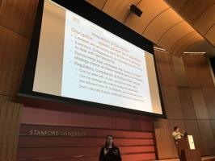

Also on seitasplace

Thoughts on Isolation: Three Difficult Years
I have now had depression for almost three years. It started in August 2013, …
What Keeps Me Up at Night
For most of my life, I have had difficulty sleeping, because my mind …
My Third Berkeley AI Research Blog Post
Hello everyone! My silence on this blog is because I was hard at work …
Better Saving and Logging for …
In many research projects, it is essential to test which of several …

Bay Area Robotics Symposium, 2018 …
The auditorium where BARS 2018 talks occurred, which was within the …
Batch Constrained Deep Reinforcement …
An interesting paper that I am reading is Off-Policy Deep …
Papers That Have Cited Policy Distillation
About a week and a half ago, I carefully read the Policy Distillation …
All the Books I Read in 2019, Plus My …
[Warning: Long Read]